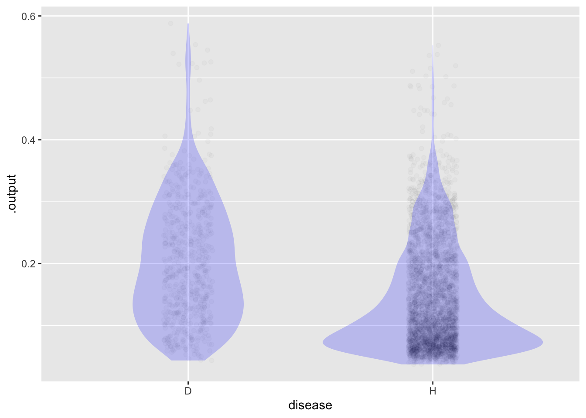
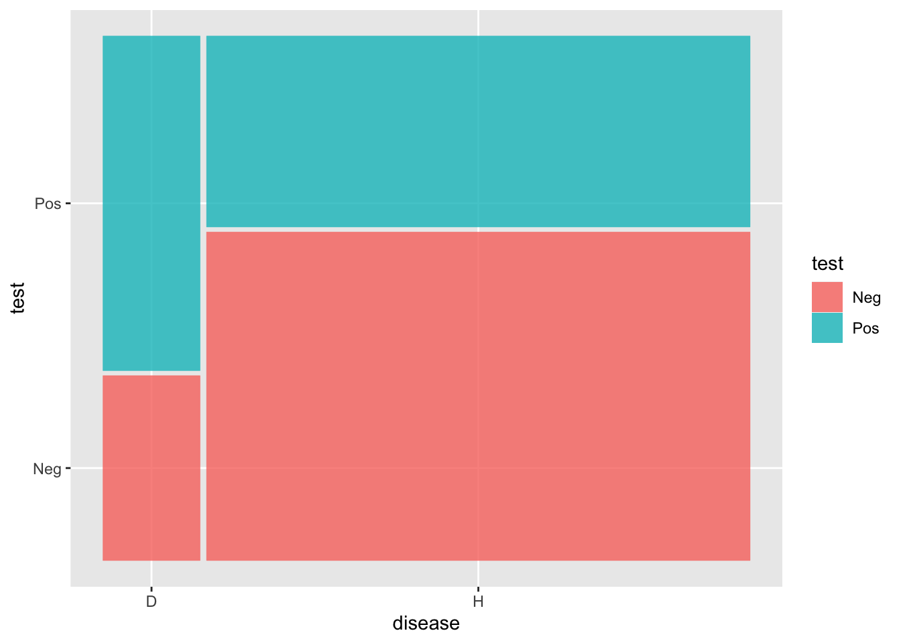

mod <- glm(TenYearCHD ~ age + diabetes + totChol,
data=Framingham, family=binomial)
Scores <- model_eval(mod, interval="none") |>
mutate(disease=ifelse(.response == 1, "D", "H"))Instructor Teaching Notes for Lesson 35
Math300Z
In the last class, we constructed models of the risk of congestive heart disease in a 10-year follow-up. The process was straightforward:
Hardest part by far: Collect data where potential risk factors are measured and the subjects followed for 10 years to see if they developed CHD. Fortunately, we have the data already at hand, but don’t underestimate how hard it is to collect such data.
Build a model of the outcome (CHD in the ten-year follow-up period) as a function of the potential risk factors.
- We did this using logistic regression, a mathematical technique that models the “log-odds” of the probability rather than the probability directly.
- For each level of a categorical risk factor, we get an “odds ratio”. Multiply this by the baseline odds to get the risk odds.
Explore which potential risk factors are the most effective at putting some people at low risk odds and others at high risk odds. That is, look for the highest variance in the model values.
This is where we ended last time.
Setting a threshold
ggplot(Scores, aes(x=disease, y=.output)) +
geom_jitter(alpha=.02, width=.1, height=0) +
geom_violin(alpha=.2, color=NA, fill="blue")
Scores <- Scores |> mutate(test = ifelse(.output > 0.15, "Pos", "Neg"))
Counts <- Scores |>
group_by(disease, test) |>
tally()
Counts# A tibble: 4 × 3
# Groups: disease [2]
disease test n
<chr> <chr> <int>
1 D Neg 226
2 D Pos 409
3 H Neg 2247
4 H Pos 1306Counts |>
tidyr::pivot_wider(names_from=test, values_from=n)# A tibble: 2 × 3
# Groups: disease [2]
disease Neg Pos
<chr> <int> <int>
1 D 226 409
2 H 2247 1306Scores |>
ggplot() +
geom_mosaic(aes(x=product(disease), fill=test))
Sensitivity, Specificity, and so on
A likelihood is a conditional probability p(observations | hypothesis)
We have two competing hypotheses:
- The patient will develop CHD ii The patient will NOT develop CHD
Sensitivity and specificity are likelihoods, because they apply under different conditions:
- Sensitivity. p( Pos test | will develop CHD)
- Specificity. p( Neg test | will NOT develop CHD)
Counts |> group_by(disease) |>
mutate(prob = n/sum(n))# A tibble: 4 × 4
# Groups: disease [2]
disease test n prob
<chr> <chr> <int> <dbl>
1 D Neg 226 0.356
2 D Pos 409 0.644
3 H Neg 2247 0.632
4 H Pos 1306 0.368Tradeoff between sensitivity and specificity
Tell the story of the Chinese spy balloon. After it was detected, the Air Force (according to news reports) increased the sensitivity of radars. This led to an increase in detection and a week-long rash of high-altitude detections, two of which were shot down. Eventually it was realized that there is a surprising amount of stuff floating around at high altitude. https://www.nytimes.com/live/2023/02/16/us/biden-china-balloon-ufo?smid=nytcore-ios-share&referringSource=articleShare
We sort out the trade-off by applying a loss function
Counts$cost = c(10,0,0,1)
Counts |> ungroup() |> summarize(total_cost = sum(n*cost))# A tibble: 1 × 1
total_cost
<dbl>
1 3566Inverting the probability
We know:
- Sensitivity prob(+ | will develop CHD)
- Specificity prob(- | will NOT develop CHD) = 1-prob( + | will NOT develop CHD)
- Prevalence: prob(will develop CHD)
These all show up in this graph:
Scores |>
ggplot() +
geom_mosaic(aes(x=product(disease), fill=test))The patient wants to know, what is the probability that I will develop CHD.
prob(will develop CHD | Pos test)
Can calculate this as ratio of blue area in D group to total blue area.
Likelihood ratio
Comparing the evidence for two hypotheses
blueD/redD /. blueH/redH = 64% / 37% = 1.7
Posterior = Likelihood_ratio * Prior
Posterior blueD/blueH
Review of Lesson 34
- We are focusing on risk in a setting with two possible outcomes, one of which we’re interested in avoiding. Risk is measured as a probability, e.g. 35%.
Multiple scales
Example: There are three widely used scales for temperature: Celsius, Fahrenheit, Kelvin. You can convert among the three without any loss of information.
Three widely used scales for probability:
- prob(A | B): a number between zero and one.
- odds(A | B): a number between zero and infinity (like Kelvin)
- logodds(A | B): a number between negative and positive infinity
- “Baseline” risk corresponds to the bad outcome occurring in a standardized set of circumstances, e.g. 30-year old female, non-smoker, with no family history of lung cancer.
- “Risk factors are circumstances that increase the risk, e.g. smoking, 60-year old, family history, and so on. (There may also be circumstances that decrease the risk, e.g. exercise, proper diet, and so on.)